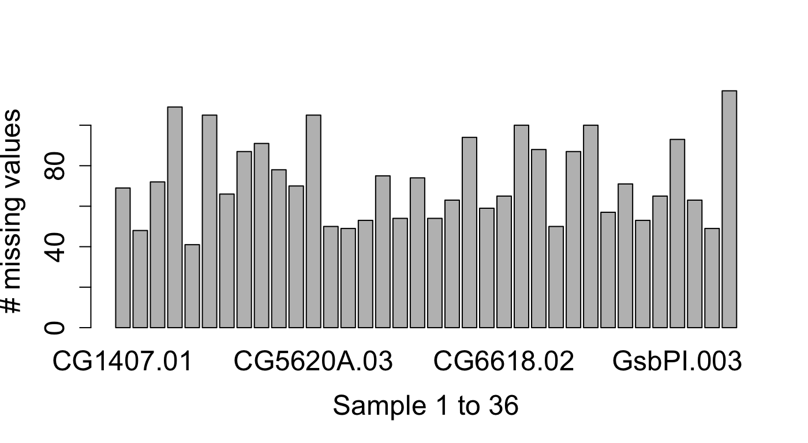
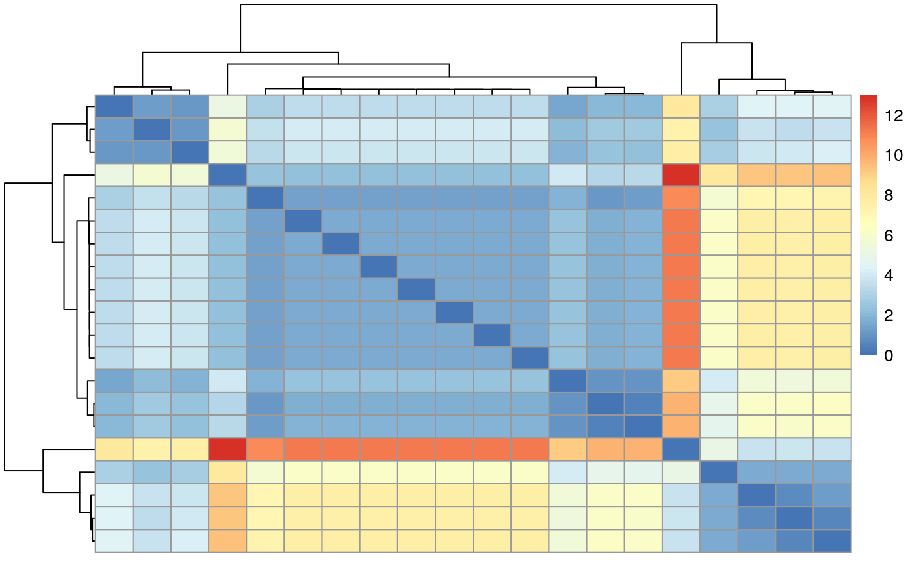

proDA
The goal of proDA is to identify differentially abundant proteins in label-free mass spectrometry data. The main challenge of this data are the many missing values. The missing values don’t occur randomly but especially at low intensities. This means that they cannot just be ignored. Existing methods have mostly focused on replacing the missing values with some reasonable number (“imputation”) and then run classical methods. But imputation is problematic because it obscures the amount of available information. Which in turn can lead to over-confident predictions.
proDA on the other hand does not impute missing values, but constructs a probabilistic dropout model. For each sample it fits a sigmoidal dropout curve. This information can then be used to infer means across samples and the associated uncertainty, without the intermediate imputation step. proDA supports full linear models with variance and location moderation.
Installation
You can install the development version from GitHub with:
The pkgdown documentation for the package is available on https://const-ae.github.io/proDA/reference
In the following section, I will give a very brief overview on the main functionality of the proDA package. New users are advised to directly go to section two, where I give a complete walkthrough and explain in detail, what steps are necessary for the analysis of label-free mass spectrometry data.
Quickstart
The three steps that are necessary to analyze the data are
- Load the data (see vignette on loading MaxQuant output files)
- Fit the probabilistic dropout model (
proDA()) - Test in which proteins the coefficients of the model differ (
test_diff())
# Load the package
library(proDA)
# Generate some dataset with known structure
syn_dataset <- generate_synthetic_data(n_proteins = 100, n_conditions = 2)
# The abundance matrix
syn_dataset$Y[1:5, ]
#> Condition_1-1 Condition_1-2 Condition_1-3 Condition_2-1 Condition_2-2 Condition_2-3
#> protein_1 NA NA 18.88592 NA 18.72059 20.06119
#> protein_2 21.37123 20.53557 18.83239 20.41027 21.73266 21.16719
#> protein_3 NA 18.77742 18.98681 NA NA 19.20291
#> protein_4 25.44209 25.15151 25.38142 25.22754 24.95229 24.97185
#> protein_5 23.46724 23.15808 23.21357 23.29562 23.25999 23.57925
# Assignment of the samples to the two conditions
syn_dataset$groups
#> [1] Condition_1 Condition_1 Condition_1 Condition_2 Condition_2 Condition_2
#> Levels: Condition_1 Condition_2
# Fit the probabilistic dropout model
fit <- proDA(syn_dataset$Y, design = syn_dataset$groups)
# Identify which proteins differ between Condition 1 and 2
test_diff(fit, `Condition_1` - `Condition_2`, sort_by = "pval", n_max = 5)
#> # A tibble: 5 x 10
#> name pval adj_pval diff t_statistic se df avg_abundance n_approx n_obs
#> <chr> <dbl> <dbl> <dbl> <dbl> <dbl> <dbl> <dbl> <dbl> <dbl>
#> 1 protein_96 0.00000248 0.000248 8.62 39.4 0.219 4 22.2 4.02 4
#> 2 protein_95 0.0000103 0.000513 -4.84 -27.6 0.175 4 21.2 6. 6
#> 3 protein_91 0.0000528 0.00176 -4.17 -18.3 0.228 4 19.1 4.01 4
#> 4 protein_98 0.000236 0.00479 4.35 12.5 0.348 4 21.6 6.00 6
#> 5 protein_100 0.000239 0.00479 2.49 12.5 0.200 4 21.3 4.95 5Other helpful functions for quality control are median_normalization() and dist_approx().
proDA Walkthrough
proDA is an R package that implements a powerful probabilistic dropout model to identify differentially abundant proteins. The package was specifically designed for label-free mass spectrometry data and in particular how to handle the many many missing values.
But all this is useless if you cannot load your data and get it into a shape that is useable. In the next section, I will explain how to load the abundance matrix and bring it into a useful form. The steps that I will go through are
- Load the
proteinGroups.txtMaxQuant output table - Extract the intensity columns and create the abundance matrix
- Replace the zeros with
NAs and take thelog2()of the data - Normalize the data using
median_normalization() - Inspect sample structure with a heatmap of the distance matrix (
dist_approx()) - Fit the probabilisitc dropout model with
proDA() - Identify differentially abundant proteins with
test_diff()
Load Data
I will now demonstrate how to load a MaxQuant output file. For more information about other approaches for loading the data, please take a look at the vignette on loading data.
MaxQuant is one of the most popular tools for handling raw MS data. It produces a number of files. The important file that contains the protein intensities is called proteinGroups.txt. It is a large table with detailed information about the identification and quantification process for each protein group (which I will from now on just call “protein”).
This package comes with an example proteinGroups.txt file, located in the package folder. The file contains the reduced output from an experiment studying the different DHHCs in Drosophila melanogaster.
system.file("extdata/proteinGroups.txt", package = "proDA", mustWork = TRUE)
#> [1] "/home/constantin/R/x86_64-pc-linux-gnu-library/3.6/proDA/extdata/proteinGroups.txt"In this example, I will use the base R functions to load the data, because they don’t require any additional dependencies.
# Load the table into memory
maxquant_protein_table <- read.delim(
system.file("extdata/proteinGroups.txt", package = "proDA", mustWork = TRUE),
stringsAsFactors = FALSE
)As I have mentioned, the table contains a lot of information (359 columns!!), but we are first of all interested in the columns which contain the measured intensities.
# I use a regular expression (regex) to select the intensity columns
intensity_colnames <- grep("^LFQ\\.intensity\\.", colnames(maxquant_protein_table), value=TRUE)
head(intensity_colnames)
#> [1] "LFQ.intensity.CG1407.01" "LFQ.intensity.CG1407.02" "LFQ.intensity.CG1407.03"
#> [4] "LFQ.intensity.CG4676.01" "LFQ.intensity.CG4676.02" "LFQ.intensity.CG4676.03"
# Create the intensity matrix
abundance_matrix <- as.matrix(maxquant_protein_table[, intensity_colnames])
# Adapt column and row maxquant_protein_table
colnames(abundance_matrix) <- sub("^LFQ\\.intensity\\.", "", intensity_colnames)
rownames(abundance_matrix) <- maxquant_protein_table$Protein.IDs
# Print some rows of the matrix with short names so they fit on the screen
abundance_matrix[46:48, 1:6]
#> CG1407.01 CG1407.02 CG1407.03 CG4676.01 CG4676.02 CG4676.03
#> A0A0B4K6W1;P08970 713400 845440 0 0 1032600 0
#> A0A0B4K6W2;A0A0B4K7S0;P55824-3;P55824 5018800 4429500 2667200 0 8780200 1395800
#> A0A0B4K6X7;A1Z8J0 0 0 0 0 0 0After extracting the bits from the table we most care about, we will have to modify it.
Firstly, MaxQuant codes missing values as 0. This is misleading, because the actual abundance probably was not zero, but just some value too small to be detected by the mass spectrometer. Accordingly, I will replace all 0 with NA.
Secondly, the raw intensity values have a linear mean-variance relation. This is undesirable, because a change of x units can be a large shift if the mean is small or irrelevant if the mean is large. Luckily, to make the mean and variance independent, we can just log the intensities. Now a change of x units is as significant for highly abundant proteins, as it is for low abundant ones.
abundance_matrix[abundance_matrix == 0] <- NA
abundance_matrix <- log2(abundance_matrix)
abundance_matrix[46:48, 1:6]
#> CG1407.01 CG1407.02 CG1407.03 CG4676.01 CG4676.02 CG4676.03
#> A0A0B4K6W1;P08970 19.44435 19.68934 NA NA 19.97785 NA
#> A0A0B4K6W2;A0A0B4K7S0;P55824-3;P55824 22.25891 22.07871 21.34689 NA 23.06582 20.41266
#> A0A0B4K6X7;A1Z8J0 NA NA NA NA NA NAQuality Control
Quality control (QC) is essential for a successful bioinformatics analysis, because any dataset shows some unwanted variation or could even contain more serious error like for example a sample swap.
Often we start with normalizing the data to remove potential sample specific effects. But already this step is challenging, because the missing values cannot easily be corrected for. Thus, a first helpful plot is to look how many missing values are in each sample.

We can see that the number of missing values differs substantially between samples (between 30% and 90%) in this dataset. If we take a look at the intensity distribution for each sample, we see that they differ substantially as well.

Note that, the intensity distribution is shifted upwards for samples which also have a large number of missing values (for example the last one). This agrees with our idea that small values are more likely to be missing. On the other hand, this also demonstrates why normalization methods such as quantile normalization, which distort the data until all the distributions are equal, are problematic. I will apply the more “conservative” median normalization, which ignores the missing values and transforms the values so that the median difference between the sample and average across all other samples is zero.
An important tool to identify sample swaps and outliers in the dataset is to look at the sample distance matrix. It shows the distances of samples A to B, A to C, B to C and so on.
The base R dist() function can not handle input data that contains missing values, so we might be tempted to just replace the missing values with some realistic numbers and calculate the distance on the completed dataset. But choosing a good replacement value is challenging and can also be misleading because the samples with many missing values would be considered too close.
Instead proDA provides the dist_approx() function that takes either a fitted model (ie. the output from proDA()) or a simple matrix (for which it internally calls proDA()) and estimates the expected distance without imputing the missing values. In addition, it reports the associated uncertainty with every estimate. The estimates for samples with many missing values will be uncertain, allowing the data analyst to discount them.
dist_approx() returns two elements the mean of the estimate and the associated sd. In the next step I will plot the heatmap for three differnet conditions, adding the 95% confidence interval as text to each cell.
# This chunk only works if pheatmap is installed
# install.packages("pheatmap")
sel <- c(1:3, # CG1407
7:9, # CG59163
22:24)# CG6618
plot_mat <- as.matrix(da$mean)[sel, sel]
# Remove diagonal elements, so that the colorscale is not distorted
plot_mat[diag(9) == 1] <- NA
# 95% conf interval is approx `sd * 1.96`
uncertainty <- matrix(paste0(" ± ",round(as.matrix(da$sd * 1.96)[sel, sel], 1)), nrow=9)
pheatmap::pheatmap(plot_mat,
cluster_rows = FALSE, cluster_cols = FALSE,
display_numbers= uncertainty,
number_color = "black")
Fit the Probabilistic Dropout Model
In the next step, we will fit the actual linear probabilistic dropoout model to the normalized data. But before we start, I will create a data.frame that contains some additional information on each sample, in particular to which condition that sample belongs.
# The best way to create this data.frame depends on the column naming scheme
sample_info_df <- data.frame(name = colnames(normalized_abundance_matrix),
stringsAsFactors = FALSE)
sample_info_df$condition <- substr(sample_info_df$name, 1, nchar(sample_info_df$name) - 3)
sample_info_df$replicate <- as.numeric(
substr(sample_info_df$name, nchar(sample_info_df$name) - 1, 20)
)
sample_info_df
#> # A tibble: 36 x 3
#> name condition replicate
#> <chr> <chr> <dbl>
#> 1 CG1407.01 CG1407 1
#> 2 CG1407.02 CG1407 2
#> 3 CG1407.03 CG1407 3
#> 4 CG4676.01 CG4676 1
#> 5 CG4676.02 CG4676 2
#> 6 CG4676.03 CG4676 3
#> 7 CG51963.01 CG51963 1
#> 8 CG51963.02 CG51963 2
#> 9 CG51963.03 CG51963 3
#> 10 CG5620A.01 CG5620A 1
#> # … with 26 more rowsNow we can call the proDA() function to actually fit the model. We specify the design using the formula notation, referencing the condition column in the sample_info_df data.frame that we have just created. In addition, I specify that I want to use the S2R condition as the reference because I know that it was the negative control and this way automatically all coefficients measure how much each condition differs from the negative control.
fit <- proDA(normalized_abundance_matrix, design = ~ condition,
col_data = sample_info_df, reference_level = "S2R")
fit
#> Parameters of the probabilistic dropout model
#>
#> The dataset contains 36 samples and 122 proteins
#> 59.7% of the values are missing
#>
#> Experimental design: y~condition
#> The model has successfully converged.
#>
#> The inferred parameters are:
#> location_prior_mean: 19.5
#> location_prior_scale: 8.37
#> location_prior_df: 3
#> variance_prior_scale: 0.283
#> variance_prior_df: 1.64
#> dropout_curve_position: 19.9, 19, 20.1, 22.8, ...
#> dropout_curve_scale: -0.816, -0.601, -1.02, -1.3, ...The proDAFit object prints a number of useful information about the convergence of the model, the size of the dataset, the number of missing values, and the inferred hyper parameters.
To make it easy to find available methods on the proDAFit object, the $-operator is overloaded and shows a list of possible functions:

Screenshot from Rstudio suggesting the available functions
# Equivalent to feature_parameters(fit)
fit$feature_parameters
#> # A tibble: 122 x 4
#> n_approx df s2 n_obs
#> <dbl> <dbl> <dbl> <dbl>
#> 1 12.0 0.001 3808. 5
#> 2 12.0 0.001 2439. 1
#> 3 19.3 8.93 4.07 14
#> 4 12.0 0.001 850. 6
#> 5 17.4 7.04 0.470 17
#> 6 12.0 0.001 2472. 1
#> 7 12.0 0.001 2410. 1
#> 8 28.9 18.6 0.217 29
#> 9 12.0 0.001 1797. 4
#> 10 12.0 0.001 1881. 4
#> # … with 112 more rowsInternally the proDAFit object is implemented as a subclass of SummarizedExperiment. This means it can be subsetted, which is for example useful for calculating the distance of a subset of proteins and samples.
# This chunk only works if pheatmap is installed
# install.packages("pheatmap")
pheatmap::pheatmap(dist_approx(fit[1:20, 1:3], by_sample = FALSE)$mean)
Identify Differential Abundance
Lastly, we will use a Wald test to identify in which proteins a coefficient is significantly different from zero. The test_diff() function takes first the fit object produced by proDA() and a contrast argument. This can either be a string or an expression if we want to test more complex combinations. For example conditionCG1407 - (conditionCG6017 + conditionCG5880) / 2 would test for the difference between CG1407 and the average of CG6017 and CG5880.
Alternatively test_diff() also supports likelihood ratio F-tests. In that case instead of the contrast argument specify the reduced_model argument.
# Test which proteins differ between condition CG1407 and S2R
# S2R is the default contrast, because it was specified as the `reference_level`
test_res <- test_diff(fit, "conditionCG1407")
test_res
#> # A tibble: 122 x 10
#> name pval adj_pval diff t_statistic se df avg_abundance n_approx n_obs
#> <chr> <dbl> <dbl> <dbl> <dbl> <dbl> <dbl> <dbl> <dbl> <dbl>
#> 1 Q8IP47;Q9VJP8;Q9V43… 0.904 0.964 -0.132 -0.122 1.08 24 18.9 12.0 5
#> 2 A0A023GPV6;A8JV04;Q… 0.923 0.964 -0.0993 -0.0979 1.01 24 18.4 12.0 1
#> 3 A0A023GQA5;P24156 0.0356 0.265 -2.92 -2.23 1.31 24 19.3 19.3 14
#> 4 Q1RKY1;A0A0B4LG19;A… 0.667 0.964 0.632 0.435 1.45 24 18.7 12.0 6
#> 5 A0A0B4JD00;A8DY69;I… 0.919 0.964 0.0689 0.103 0.670 24 20.0 17.4 17
#> 6 A0A0B4JCT8;Q9V780 0.923 0.964 -0.0995 -0.0981 1.01 24 18.5 12.0 1
#> 7 A0A0B4LHQ4;A0A0B4JD… 0.923 0.964 -0.0991 -0.0977 1.01 24 18.4 12.0 1
#> 8 A0A0B4JCW4;Q9VHJ8;Q… 0.643 0.964 -0.197 -0.469 0.419 24 21.9 28.9 29
#> 9 Q9VDV4;A0A0B4JCY1;Q… 0.295 0.861 1.95 1.07 1.82 24 18.7 12.0 4
#> 10 A0A0B4JCY6;Q7KSF4;A… 0.598 0.964 -0.783 -0.535 1.46 24 19.0 12.0 4
#> # … with 112 more rowsThis walkthrough ends with the identification which proteins are differentially abundant. But for a real dataset, now the actual analysis only just begins. A list of significant proteins is hardly ever a publishable result, one often needs to make sense what the relevant underlying biological mechanisms are. But for this problem other tools are necessary, which depend on the precise question associated with the biological problem at hand.
Session Info
sessionInfo()
#> R version 3.6.0 (2019-04-26)
#> Platform: x86_64-pc-linux-gnu (64-bit)
#> Running under: Ubuntu 18.04.2 LTS
#>
#> Matrix products: default
#> BLAS: /usr/lib/x86_64-linux-gnu/openblas/libblas.so.3
#> LAPACK: /usr/lib/x86_64-linux-gnu/libopenblasp-r0.2.20.so
#>
#> locale:
#> [1] LC_CTYPE=en_US.UTF-8 LC_NUMERIC=C LC_TIME=de_DE.UTF-8
#> [4] LC_COLLATE=en_US.UTF-8 LC_MONETARY=de_DE.UTF-8 LC_MESSAGES=en_US.UTF-8
#> [7] LC_PAPER=de_DE.UTF-8 LC_NAME=C LC_ADDRESS=C
#> [10] LC_TELEPHONE=C LC_MEASUREMENT=de_DE.UTF-8 LC_IDENTIFICATION=C
#>
#> attached base packages:
#> [1] stats graphics grDevices utils datasets methods base
#>
#> other attached packages:
#> [1] proDA_0.99.0 BiocStyle_2.12.0
#>
#> loaded via a namespace (and not attached):
#> [1] SummarizedExperiment_1.14.0 xfun_0.6 lattice_0.20-38
#> [4] colorspace_1.4-1 htmltools_0.3.6 stats4_3.6.0
#> [7] yaml_2.2.0 utf8_1.1.4 rlang_0.3.4
#> [10] pkgdown_1.3.0 pillar_1.3.1 BiocParallel_1.18.0
#> [13] BiocGenerics_0.30.0 RColorBrewer_1.1-2 matrixStats_0.54.0
#> [16] GenomeInfoDbData_1.2.1 stringr_1.4.0 zlibbioc_1.30.0
#> [19] munsell_0.5.0 gtable_0.3.0 commonmark_1.7
#> [22] memoise_1.1.0 evaluate_0.13 Biobase_2.44.0
#> [25] knitr_1.22 IRanges_2.18.0 GenomeInfoDb_1.20.0
#> [28] parallel_3.6.0 fansi_0.4.0 Rcpp_1.0.1
#> [31] scales_1.0.0 backports_1.1.4 BiocManager_1.30.4
#> [34] DelayedArray_0.10.0 S4Vectors_0.22.0 desc_1.2.0
#> [37] XVector_0.24.0 fs_1.3.0 digest_0.6.18
#> [40] stringi_1.4.3 bookdown_0.9 GenomicRanges_1.36.0
#> [43] rprojroot_1.3-2 grid_3.6.0 cli_1.1.0
#> [46] tools_3.6.0 bitops_1.0-6 magrittr_1.5
#> [49] RCurl_1.95-4.12 tibble_2.1.1 crayon_1.3.4
#> [52] pkgconfig_2.0.2 MASS_7.3-51.1 pheatmap_1.0.12
#> [55] Matrix_1.2-17 xml2_1.2.0 assertthat_0.2.1
#> [58] rmarkdown_1.12 roxygen2_6.1.1 extraDistr_1.8.10
#> [61] rstudioapi_0.10 R6_2.4.0 compiler_3.6.0